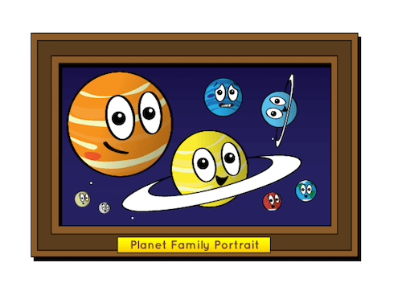
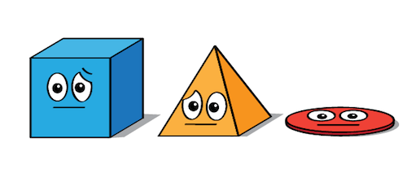
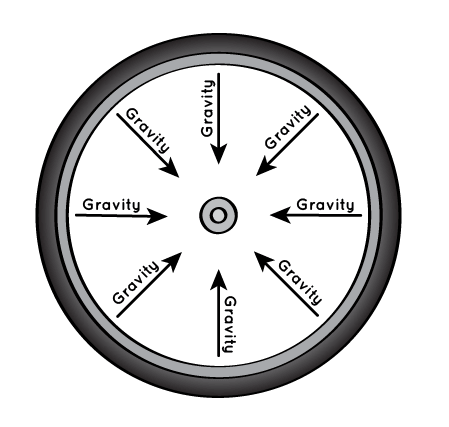
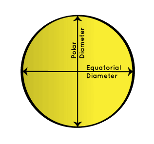
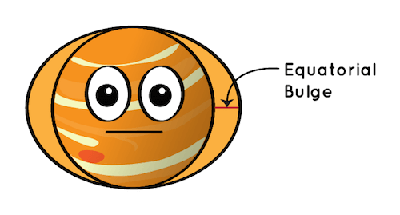

ဒီမေးခွန်းကို လွယ်လွယ် ဖြေရရင်တော့ ဆွဲငင်အား (Gravity) ကြောင့် လို့ပဲ ဖြေရမှာ ဖြစ်ပါတယ်။ ဂြိုဟ်တစ်စင်းရဲ့ ဆွဲငင်အားဟာ အဖက်ဖက်ကို ညီတူ မျှတူ ဆွဲနေပါတယ်။ ဒီလို ဆွဲတဲ့ နေရာမှာ ဂြိုဟ်ရဲ့ ဗဟိုကနေ ပတ်ခြာလည်ကို စက်ဘီးက စပုတ်တိုင် တွေလို ဆွဲငင်အားတွေ ဖြာထွက်ပြီး ဆွဲနေတာပါ (မြင်သာအောင် ဥပမာ ပြတာပါ၊ တကယ်ကတော့ ဆွဲငင်အားက အဲ့လို ဖြာ မထွက်နေပါဘူး။) ဒီလို အလယ် ဗဟို ကနေ ပတ်ခြာလည်ကို ညီညီ ညာညာ ဆွဲတဲ့ အတွက် ဂြိုဟ်တွေဟာလဲ လုံးလုံးကြီးတွေ ဖြစ်နေရတာ ဖြစ်ပါတယ်။

သေးသေးကြီးကြီး လုံးနေတယ်
ကျွန်တော်တို့ နေအဖွဲ့အစည်း ထဲက ဂြိုဟ်ကြီး ၈ လုံရဲ့ အရွယ်အစားက သိသိသာသာကို ကွာပါတယ်။ မာကြူရီ လို (ဗုဒ္ဓဟူးဂြိုဟ်) လို အလွန် သေးတဲ့ ဂြိုဟ်ကနေ ဂျူပီတာ (ကြာသပတေး) ဂြိုဟ်လို အလွန် ကြီးတဲ့ ဂြိုဟ် အထိ အရွယ် အမျိုးမျိုးပါ။ ဒီလိုပဲ ဒီဂြိုဟ်တွေရဲ့ နေကနေ အကွာအဝေး ကလဲ ကွာပါတယ်။ ဒါပေမယ့် အားလုံးမှာ တူညီတဲ့ အချက်ကတော့ ကြီးကြီး ငယ်ငယ် ဝေးဝေး နီးနီး လုံးဝန်းနေတယ် ဆိုတာပါပဲ။ဘာ့ကြောင့် ဒီလို ဖြစ်ရတာပါလဲ။ ဘာ့ကြောင့် လေးထောင့်ပုံ ဂြိုဟ်တွေ၊ တြိဂံပုံ ဂြိုဟ်တွေ၊ ဂြိုဟ်ပြားကြီးတွေ ဖြစ်မနေ ရတာပါလဲ။

ဂြိုဟ်တွေဟာ အာကာသ ထဲက ဖြစ်ထွန်းစ ကြယ်တွေရဲ့ ပတ်ခြာလည်က ဓါတ်ငွေ့တွေ၊ ဖုန်မှုန့်တွေနဲ့ အခြား အရာဝတ္ထုတွေ အချင်းချင်း ပူးကပ်မိ သွားရာကနေ ဖြစ်ထွန်းလာ ကြတာ ဖြစ်ပါတယ်။ ဓါတ်ငွေ့ တိမ်တိုက် ကြီးတွေကနေ နေရယ်လို့ ဖြစ်လာတဲ့ အချိန်မှာ ကြွင်းကျန် ရစ်ခဲ့တဲ့ ဓါတ်ငွေ့တွေ၊ ဖုန်မှုန့်တွေနဲ့ အခြား ဥက္ကာခဲ အပိုင်းအစတွေဟာ အလယ် မှာ ရှီတဲ့ နေကို ပတ်ပြီး ဝဲကြီး တစ်ခုလို လှည့်ပတ် နေခဲ့ပါတယ်။
ဒီ ဓါတ်ငွေ့နဲ့ ဖုန်မှုန့် ဝဲဂယက်ကြီး ထဲက အချို့သော ဖုန်မှုန့်တွေ၊ ဥက္ကာခဲ အပိုင်းအစတွေဟာ အချင်းချင်း တိုက်မိ ကြတဲ့အခါ ပူးကပ် သွားကြပါတယ်။ ဒီလို ပူးကပ်ပြီး တဖြည်းဖြည်း စုမိလာ တဲ့ အခါကျတော့ အရွယ်အစားကလဲ တဖြည်းဖြည်း ကြီးလာပြီး ဆွဲငင်အားလဲ အားကောင်းလာပါတယ်။ ဒီ အားကောင်းလာတဲ့ ဆွဲငင်အားကြောင့် ပတ်ဝင်းကျင်မှာ ရှိနေတဲ့ ဓါတ်ငွေ့တွေ၊ ဖုန်မှုန့်တွေ၊ ဥက္ကာခဲ အပိုင်း အစတွေ လာကပ်ပြီး အရွယ် အစားကလဲ ပိုပြီး ကြီးလာပါတယ်။
ဒီလို အရွယ်အစား ကြီးလာ ဒြပ်ထု ကြီးလာ တာနဲ့ အမျှ ဆွဲငင်အားကလဲ ပိုအား ကောင်းလာပါတယ်။
ဒီနေရာမှာ သတိပြုမိ ရမှာက ဂြိုဟ်ဖြစ်လာတဲ့ ဓါတ်ငွေ့တွေ၊ ဖုန်မှုန့်တွေ၊ ဥက္ကာခဲ့ အပိုင်း အစတွေ အားလုံးဟာ မူလ အစ ကတဲက နေကို ဝဲဂယက်လို ပတ်နေတယ် ဆိုတာပဲ ဖြစ်ပါတယ်။ ဒီတော့ အခု အသစ်ဖြစ်လာနေတဲ့ ဂြိုဟ်ဟာလဲပဲ မူလက ဓါတ်ငွေ့တွေ၊ ဖုန်မှုန့်တွေ၊ ဥက္ကာခဲ အပိုင်းအစတွေ သွားနေခဲ့တဲ့ အတိုင်း နေကို ဆက်လက် လည်ပတ်နေမှာ ဖြစ်ပါတယ်။
ဒီလို လည်ပါတ်နေရင်း လမ်းမှာ တွေ့သမျှ အရာဝတ္ထု တွေကို ဆွဲယူရင်းနဲ့ တဖြည်းဖြည်း ကြီးလာတဲ့ ဂြိုဟ်ပေါက်စန လေးရဲ့ အတွင်းက ဆွဲငင်အားက အလယ် ဗဟိုကို ဗဟိုချက် ထားပြီး ပတ်ခြာလည်ကို ညီညီ မျှမျှ ဆွဲနေတာ ဖြစ်ပါတယ်။ တနည်းအားဖြင့် ဗဟိုကနေ ဂြိုဟ်ကို ဖွဲစည်းထားတဲ့ အရာဝတ္ထုတွေကို သက်ရောက်တဲ့ ဆွဲအား သက်ရောက်မှုက ၃၆၀ ဒီဂရီ ပတ်လည်ကို ညီညီညာညာ အားသက်ရောက် နေတာပါ။ ဒါ့ကြောင်လဲ ဂြိုဟ်ပေါက်စန လေးဟာ တဖြည်းဖြည်း လုံးဝန်း လာတာ ဖြစ်ပါတယ်။

ဒါဆို ဂြိုဟ်တွေဟာ လုံးဝ ညီညာ ဝိုင်းစက်နေသလား
ဒီလိုတော့ မဟုတ်ပါဘူး။ နေ အဖွဲအစည်းထဲက ဂြိုဟ်တွေ အားလုံးဟာ လုံးဝိုင်းနေ ပေမယ့် လုံးဝ ညီညာ ဝိုင်းစက် နေခြင်းတော့ မရှိပါဘူး။ အခြို့သော ဂြိုဟ်တွေက ပိုပြီး လုံးဝန်း ကြပါတယ်။ ဥပမာ နေနဲ့ အနီးဆုံးနဲ့ အသေးဆုံး ဂြိုဟ်တွေ ဖြစ်တဲ့ မာကျူရီ (ဗုဒ္ဓဟူးဂြိုဟ်) နဲ့ ဗီးနပ်စ် (သောကြာဂြိုဟ်) တို့ဟာ အခြား ဂြိုဟ် တွေထက် ပိုပြီး လုံးဝန်း ကြပါတယ်။ သူတို့ရဲ့ လုံးဝန်းပုံက ဘောလုံး တစ်လုံး လုံးဝန်းပုံမျိုး နီးပါး ညီညီ ညာညာ လုံးဝန်းနေတာ ဖြစ်ပါတယ်။ဒါပေမယ့် အခြား ဂြိုဟ်တွေ ကတော့ ဒီလောက်ထိ ညီညီ ညာညာ လုံးဝန်းနေတာမျိုး မဟုတ်ပါဘူး။
စေတန် (စနေဂြိုဟ်) နဲ့ ဂျူပီတာ (ကြာသပတေး ဂြိုဟ်) တွေဟာ ခလယ်မှာ ဖေါင်းပြီး ဗိုက်ပူနေ ကြပါတယ်။ ဒီဂြိုဟ်တွေက ဝင်ရိုးပေါ် ဗဟိုပြုပြီး လည်ပတ်တဲ့ အခါ ဗဟိုခွာအား (centrifugal force) ကြောင့် ခလယ်ပိုင်းက နဲနဲ ကားထွက်လာပြီး ဗိုက်ပူလာတာ ဖြစ်ပါတယ်။

စက်ဘီး ဘီးကို လှည့်လိုက်ရင် ဘီး အနားက နေရာက ဘီးရဲ့ ဗဟို ဝင်ရိုးနားက နေရာထက် ပိုပြီး အရှိန်မြန်မြန် လည်ရပါတယ်။ ဗဟိုနဲ့ ဝေးလေ အရှိန်မြန်မြန်နဲ့ လှည့်ရလေပါ။ ဒါမှလဲ အလယ်နားက တစ်ပတ် ပတ်မိချိန်မှာ သူကလဲ တစ်ပါတ် အတူတူ ပါတ်မိမှာကိုး။
စက်ဘီး ဘီးမှာ ရွှံ့တွေ ပေနေတဲ့ အချိန် ဘီးကို အရှိန်မြန်မြန် လှည့်မိရင် ဘာဖြစ်သွားသလဲ။ ရွှံ့တွေ စင်ထွက် သွားတယ် မဟုတ်လား။ ဒီသဘောကို centrifugal force ဗဟိုခွာအား လို့ ခေါ်တာပါ။ ဂြိုဟ်မှာလဲ ဂြိုဟ်က လည်တဲ့အခါ အလယ်ပိုင် အီကွေတာ နဲ့ နီးတဲ့ အရပ်က လည်တဲ့ ဗဟိုနဲ့ အဝေးဆုံးမို့ ရွှေ့တဲ့ နှုန်းကလဲ အမြန်ဆုံး ဖြစ်နေပါတယ်။ ဒီတော့ ဂြိုဟ်ထဲက အရာ ဝတ္ထုတွေက ခုနက ပြောတဲ့ ဗဟိုခွာအားနဲ့ ဂြိုဟ် အပြင်ဖက်ကို ထွက်သွားဖို့ ကြိုးစားကြပါတယ်။ ဒါပေမယ့် ဆွဲအား က ဆွဲထားတော့ လွတ်အောင် မရုန်းနိုင်ပဲ ဗိုက်ဖေါင်းလာ ရုံထိပဲ တတ်နိုင်ပါတယ်။ ဒါ့ကြောင့်လဲ ဒီဂြိုဟ်ကြီးတွေက ဗိုက်ကလေး ပူနေရတာ ဖြစ်ပါတယ်။
ဒီလို ခလယ်က ဗိုက်ပူ နေတာကို အီကွေတာ ဗိုက်ပူခြင်း (Equatorial Bulge) လို့ အမည်ပေးထားပါတယ်။

အခြား ဂြိုဟ်တွေ ကျတော့ရော
ကမ္ဘာနဲ့ မားစ် (အင်္ဂါဂြိုဟ်) တွေက အရွယ်ကလဲ သေးတယ်၊ လည်နှုန်းကလဲ သိပ်မမြန် ပါဘူး။ သူတို့လဲ လုံးဝ လုံးဝန်း နေတာတော့ မဟုတ်ပဲ အလယ်မှာ နဲနဲ ဖေါင်းနေပါတယ်။ ဒါပေမယ့် စနေဂြိုဟ်နဲ့ ကြာသပတေး ဂြိုဟ်တွေလောက်တော့ ဗိုက်မပူပါဘူး။ ကမ္ဘာရဲ့ အီကွေတာ အချင်းက ဝင်ရိုးစွန်း အချင်းထက် ၀.၃% လောက် ပိုများပြီး မားစ် ကတော့ ၀.၆% လောက် ပိုများပါတယ်။ အဲ့သည်တော့ အဝေးက ကြည့်ရင် လုံးဝန်းနေတယ်လို့ ပြောလို့ ရပါတယ်။ယူရေးနပ်စ် နဲ့ နက်ပ်ကျွန်း ဂြိုဟ်တွေကတော့ အလယ်အလတ်လောက် ဖေါင်းတယ် ပြောလို့ ရပါတယ်။ ယူရေးနပ်စ် က ၂.၃% ဖေါင်းပြီး နက်ပ်ကျွန်း ကတော့ ၁.၇% လောက် ဖေါင်းပါတယ်။
Reference: Why Are Planets Round? | NASA